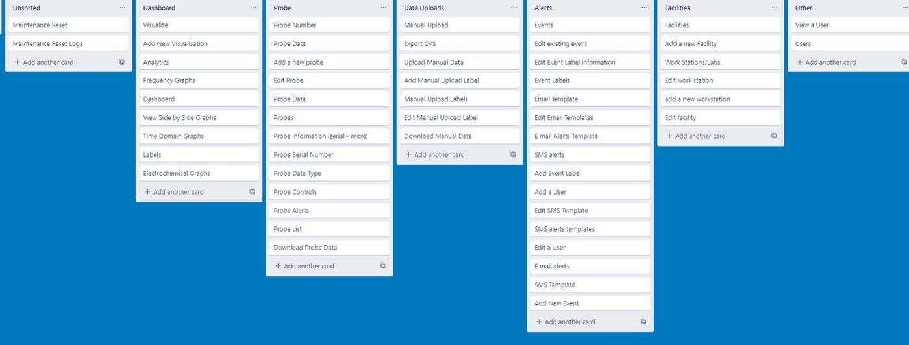
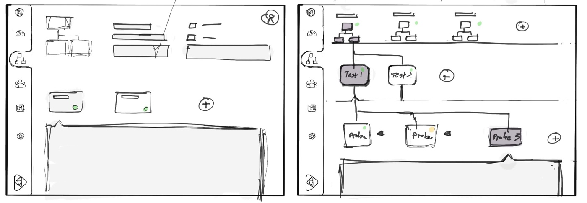
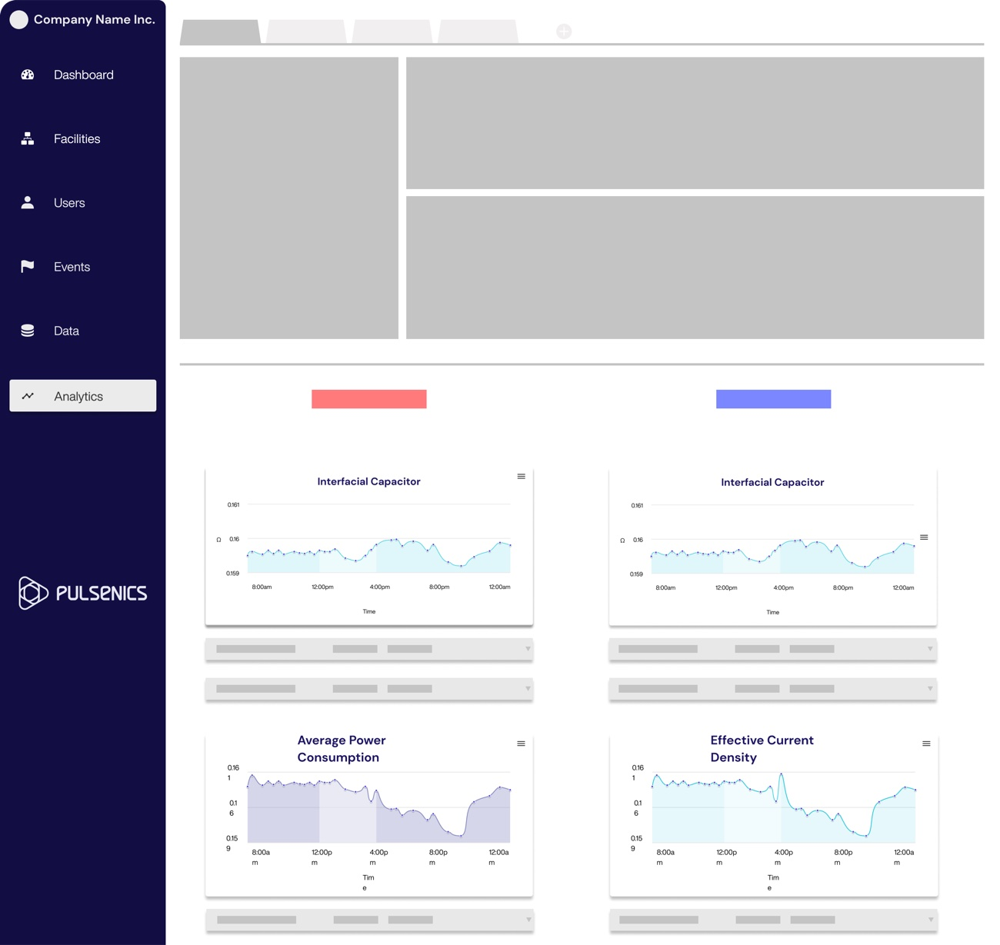
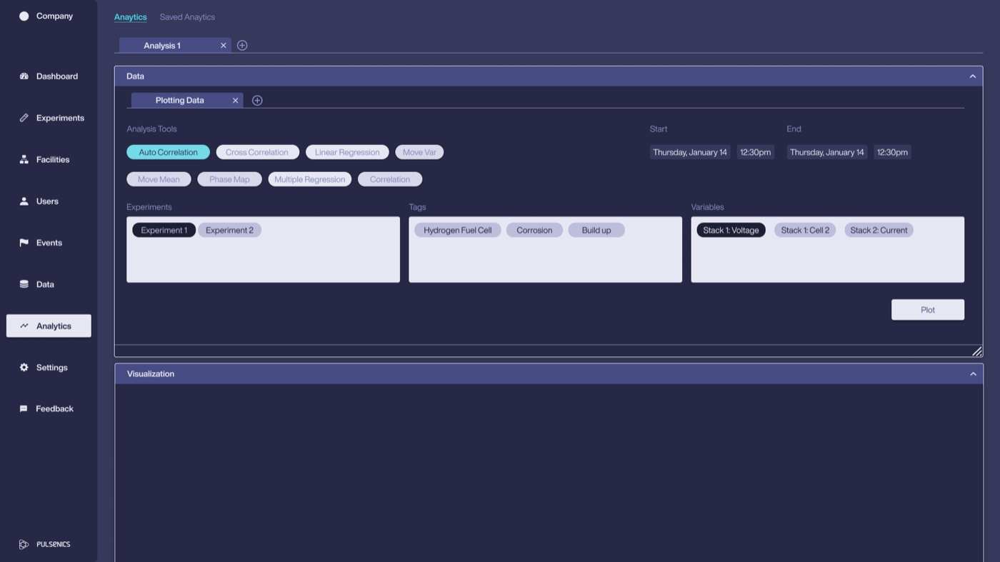
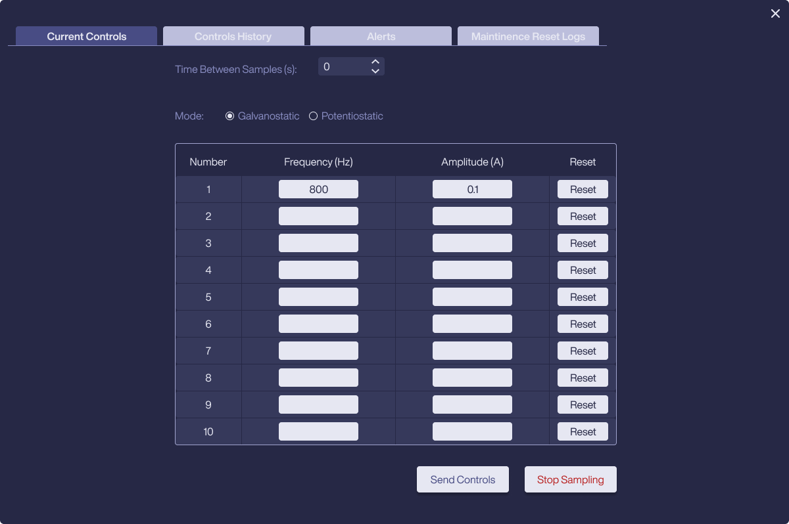
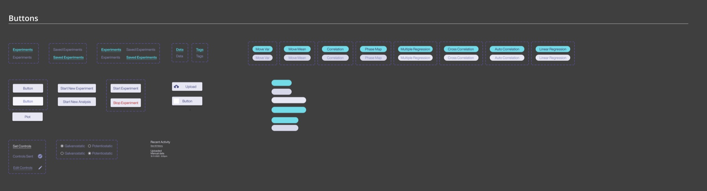

Pulsenics System Software
The web app Pulsenics and its clients use to manage their testing hardware, run experiments, control probes and analyse electrochemical data.
Code sent straight to the probes
The team ran experiments from testbed software, sending commands to the hardware in code.
Made those steps visual
We met the engineers, mapped how their experiments need to run, and designed each part of the app and its UI system.
Shipped with the product launch
Pulsenics' clients use it today as part of the company's core offering.


- ClientPulsenics, Toronto
- ProductWeb app for running experiments and managing probes
- TeamMe and Marc Varone (50/50), with Pulsenics' backend team
- My roleProduct design and the UI system, from the ground up
- TimelineDesigned from early 2021, shipped a year later
- StatusIn use
Design a tool that lets Pulsenics and its clients run experiments and manage every probe they have connected.
Pulsenics makes electrochemical impedance spectroscopy (EIS) hardware: probes that test the health and performance of batteries, fuel cells and electrolyzers without damaging them. The software sits between that hardware and the people using it. It has to know what is plugged in where, start and stop measurements, and turn a stream of readings into something an engineer can act on.
- Users
Technical teams
Engineers and researchers who know the chemistry and want precise control.
- Data
Dense and continuous
Measurements stream in from many cells at once, across frequency and time, for hours or days.
- Hardware
Physically nested
Facilities hold test stations, test stations hold probes, and probes connect to cells through channels.
From commands in code to a visual UI
The app launched with the product. Until then, running an experiment meant using testbed software and sending commands to the probes in code. Our goal was to take that series of steps and make it visual.
Meet the engineers
We sat down with them and saw how they need an experiment to run.
Map the flow
We mapped it from plugging in hardware to analysing the results. That map is below.
Build it section by section
Then we designed each part in turn, from wireframes to final UI.
We worked closely with the backend team the whole way, so we understood quickly what was and wasn't possible. There was pushback on both sides at times.
The Figma file still shows the path: an open card sort with Pulsenics staff and user flows, sketches, eight rounds of wireframes, a foundation for the UI system, then the final screens and handoff to developers.




This is the flow we mapped with the engineers. Everything in the app supports it, from plugging in hardware to explaining what the data shows.
- Pick the hardware
- Start the experiment
- Control the probe
- Watch it live
- Mark what happened
- Analyse the results
Mirror the physical setup
Hardware is chosen from a connected tree that matches how the equipment is actually wired: Facilities, then Test Stations, then Probes, then Channels, with each channel showing how many cells are connected.
Selecting any node dims every branch it doesn't belong to, so it's always clear which cells an experiment will touch. Search sits on top for setups too large to scan.

Make starting an experiment one decision
Once hardware is picked, starting is a small pop-up: a start and end time, with two shortcuts for the most common cases, Start Now and No specified end time.

Give direct control of the instrument
Probe controls expose what the hardware actually does: choose a probe, set the time between samples, switch between galvanostatic and potentiostatic mode, and enter up to ten frequency and amplitude pairs.
Send Controls and a red Stop Sampling sit together at the end, so the safe way out is always visible. Tabs keep the controls history, alerts and maintenance logs one click away.

Keep running work in view
Live experiments get their own table with facility, test station, probe, timing and a progress bar, plus quick actions to open, duplicate or delete. Once a run finishes, it moves to Saved Experiments, so the live table only shows what's actually running.
Work with the data in one place
Every graph shows its full hardware path at the top. You always know which cell you're looking at. If something odd shows up, you can select that range and save it as a tagged Event. The whole team can find it later.
Adding a visualization reuses the hardware tree, then groups the data the way electrochemists think about it: electrochemical, frequency domain and time domain. Analysis tools such as correlation, regression and moving averages sit in the same app, each opening in its own tab.


Marc and I built the design system alongside the screens. It gave Pulsenics a set of reusable assets and made prototyping much easier.
- Sections
Collapsible, resizable panels
Every area of the app (hardware, tags, live and saved experiments, data, visualizations) is a panel that can be opened, closed or resized. Users set the workspace up around what they're working on.
- Navigation
Nine sections, two widths
Dashboard, Experiments, Facilities, Users, Events, Data, Analytics, Settings and Feedback, each with a selected state, plus a slimmer rail with just the icons for more room.
- Charts
One graph component
The same graph, toolbar and events tab are used everywhere data is plotted, in four states from no events to many.


Colour
Contrast
Secondary text and column headers sit close to the panel colour. I'd raise them to meet WCAG AA, which matters for people staring at data all day.
Inputs on dark
The light input fields are the brightest thing on screen. A darker field with a clear focus ring would keep attention on the data.
Hierarchy
Most panels carry the same visual weight. Giving live data more presence than setup controls would help scanning.
Designed with Marc Varone
Pulsenics System Software was designed by two of us. See more of Marc's work at marcvarone.com.